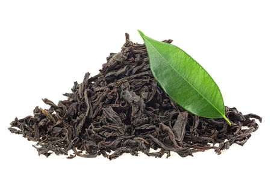

| 
ชา มาจาก พืชตระกูลคาเมเลีย ไซเนนซิส (Camellia sinensis) ถิ่นกำเนิดอยู่ใน จีน และ อินเดีย ลักษณะต้นเป็นพุ่ม ใบเขียว “ส่วนของต้นชาที่นำมาเป็นเครื่องดื่มจะอยู่ส่วนบนสุดของต้น” ซึ่งเป็น ใบอ่อน เป็นส่วนที่มีคุณภาพดีที่สุด เครื่องมือในการเก็บใบชาที่ดีที่สุดก็คือ มือของเรานั่นเองค่ะ มีตำนานกล่าวไว้ว่า เมื่อหลายพันปีมาแล้วคนจีนได้เริ่มดื่มชา โดยมีที่มาจาก จักรพรรดิเสิน-หนง (Emperor Shen Nung) ขณะทรงต้มน้ำร้อนได้มีใบชาปลิวตกลงในหม้อน้ำเดือด ทรงชิมดูพบว่ามีรสชาติดีและมีกลิ่นหอม จากนั้นมาชาก็เป็นที่รู้จักและนิยมดื่มกันทั่วไป ชาเดินทางจากจีนสู่ยุโรปครั้งแรกที่ฮอลแลนด์ ประมาณปี ค.ศ.1606 โดยเรือของบริษัทดัทช์อีสต์อินเดียของฮอลแลนด์ ในยุคนั้นใบชาเป็นของแพงและเป็นเครื่องดื่มเฉพาะในราชสำนักและชนชั้นสูง ค.ศ.1652 ชาเข้าสู่อังกฤษ ได้รับความนิยมจนกลายเป็นส่วนหนึ่งของวิถีชีวิต ตลาดชาผูกขาดโดยบริษัทอีสต์อินเดียของอังกฤษ ท่ามกลางความต้องการสูงแต่จีนกลับขายชาคุณภาพต่ำให้อังกฤษ และกระทำผ่านตัวแทนจักรพรรดิ์จีน จะแลกเปลี่ยนใบชากับเงินเท่านั้น อังกฤษจึงนำฝิ่นมาขายในจีน เพื่อแปรเป็นเงินซื้อใบชากลับไป |